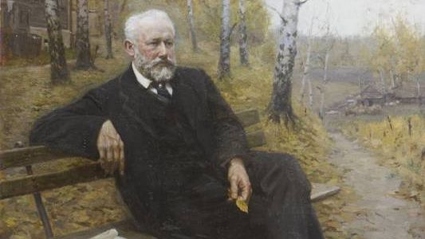

Петр Ильич Чайковский – известный всему музыкальному миру композитор и дирижер. На счету у Чайковского порядка 80 произведений. Петр Ильич родился в Воткинске весной 1840 года.
Михаил Глинка написал первую национальную русскую оперу — «Жизнь за царя», стал одним из основоположников русского романса и придумал, как можно совместить разные ритмы в одном произведении.
Александр Алябьев - русский композитор, пианист, дирижёр. В XIX веке пользовался большим успехом, написал около 200 романсов, 6 опер, 20 музыкальных комедий, множество других музыкальных произведений.
Творческое содружество русских композиторов, сложившееся в Санкт-Петербурге в конце 1850-х и начале 1860-х годов.Первый шаг к появлению «Могучей кучки» — приезд в 1855 году в Петербург одаренного 18-летнего музыканта Милия Балакирева. Блестящими выступлениями пианист обратил на себя внимание не только искушенной публики, но и самого известного музыкального критика того времени — Владимира Стасова, который стал идейным вдохновителем объединения композиторов.
В статье В. Стасова «Славянский концерт г. Балакирева», посвящённой концерту под управлением Балакирева в честь славянских делегаций на Всероссийской этнографической выставке в 1867 г., в заключение было высказано пожелание, чтобы славянские гости «навсегда сохранили воспоминания о том, сколько поэзии, чувства, таланта и умения есть у маленькой, но уже могучей кучки русских музыкантов». Так и закрепилось за сообществом название «Могучая кучка».